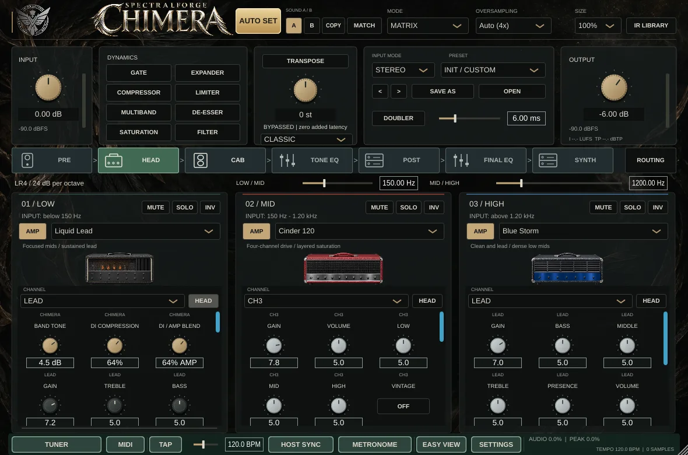
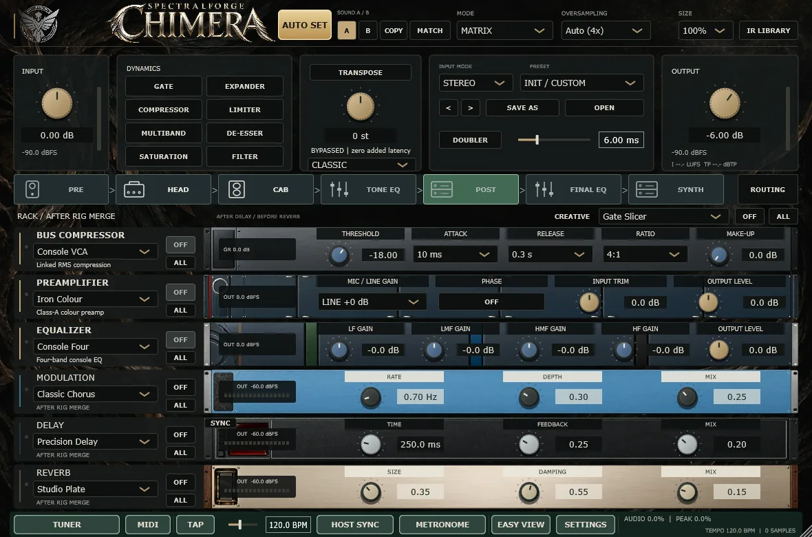
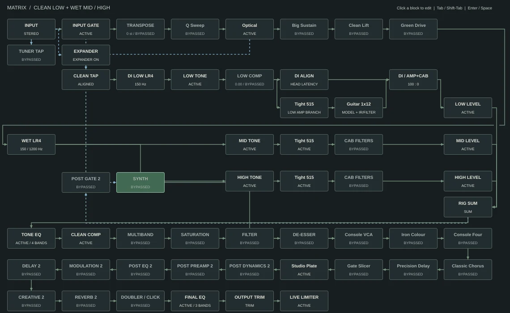

SpectralForge Chimera
Version 1.5.0-beta.1
Guitar and bass amp matrix — VST3, Standalone and OBS filter for Windows, macOS and Linux, plus AU on macOS.
Download
Manual (EN/DE/KO) · Release notes and checksums
Close Chimera and your DAW before installing. Projects, presets and personal IRs are kept.
OBS filter on its own
The installers above already offer the OBS Studio filter as an optional item (on Windows it is part of the Windows installer). If you only want to add the filter, these packages install it on its own: close OBS, then run ./install.sh from the unpacked folder. The Chimera VST3 must be installed.
Linux needs OBS from your distribution's packages (Flatpak and Snap are not supported) and glibc 2.38 or newer; the editor window needs X11 (XWayland under Wayland). The macOS module is not notarized yet. These packages are the ones published with 1.4.1-beta.1; the OBS filter code is the same in 1.5.0-beta.1. Checksums
License period
This beta is licensed for use until 2027-05-31 23:59 KST (2027-05-31 14:59 UTC). SETTINGS shows the exact time left, and a warning appears 14 days before.
Instances already open keep running after expiry. Instances opened after expiry keep their state with the output muted.
A verified beta tester code (SETTINGS → Enter beta tester code...) lifts the expiry on that computer with no end date.
What’s new in 1.5
- POST second slots: every POST section has an independent second slot, for example two delays at once. All second slots start off, and existing projects sound the same.
- Drag on the POST page: drag a rack row by its grip to reorder the chain.
- Metro Clean is now a two-channel bass head (MODERN and CLASSIC) with O/D SYMMETRY. Saved projects open on MODERN with their knob values, but the former VOICING and HI MID controls are retired and HIGH PASS and the mid frequency follow new ranges, so a project that uses Metro Clean can sound different.
- New artwork for five reference heads.
- More Auto Set steps, all off by default, for the amps of both Dual rigs and of the Matrix MID and HIGH lanes.
- The new functions have had automated tests only.
What’s new in 1.4.1
- Seven new Auto Set steps, all off by default: room ambience (Room Core); cabinet cuts, factory IR choice, mic placement, and mic alignment and blend for the Dual rigs and Matrix lanes; and the boost pedal in a Dual Blend. They have had synthetic tests only.
- The OBS filter keeps a preset pushed while OBS is saving the filter.
- Models, parameters and saved projects are unchanged from 1.4.0-beta.1.
What’s new in 1.4
- 132 selectable models: AMP 30, PRE 51, POST 39, CREATIVE 9, SYNTH 3.
- Signal-order editor with drag-and-drop in the PRE board and ROUTING graph.
- SYNTH page that follows your playing: 3 engines, 3 oscillators, sample mode and a mod matrix.
- Room spatial stage, six-band dynamics and a Studio true-peak limiter with LUFS metering.
- Graphical EQ group editing, band SOLO and per-EQ A/B.
- New Auto Set phases: lane polarity, delay sync, factory IR choice and instrument detection.
- Easy view, A/B MATCH and the OBS filter on all three platforms.
Screenshots





Captured from the 1.5.0-beta.1 source (Linux, 100%). The SYNTH page is the 1.4.0-beta.1 capture.
Known limitations
- This is a beta, not a stable release. Automated builds and tests pass on Windows, macOS and Linux; 107 strict checks remain unexecuted and disclosed.
- Real guitar/bass DI listening and real DAW/audio-device acceptance are still open.
- Installers are not publicly signed or notarized yet. AAX is not included.
- Existing projects keep their sound, except those that use Metro Clean (see What’s new). New parameters are appended and start off.